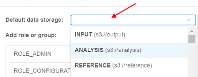
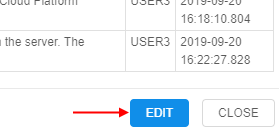
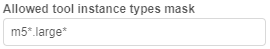

12.4. Edit/delete a user
User shall have ROLE_ADMIN to edit/delete users.
Edit a user
For edit a user:
- Open Users tab on User management section of system-level settings.
- Find a user.
- Click Edit button in the row opposite the user name:

- Pop-up window will be shown:

On this form there are several blocks of the settings for a user.
Default data storage
Here you can select default data storage for a user:

Groups (roles) management
In this block you can set groups and roles for the selected user:

For more information about changing a set of the roles/groups for the specific user see 12.8. Change a set of roles/groups for a user.
Attributes

In this block you can set metadata tags (attributes) for a user. These tags represent key/value pairs, same as pipeline/folder tags. For more information see 17. CP objects tagging by additional attributes.
"Blocking" notifications track
One of the special attribute that is set automatically - information about the notifications confirmation:

Via that attribute you can view, which "blocking" notifications were confirmed by the user (about system notifications see here).
This attribute is shown only for users that confirmed at least one "blocking" notification.
By default, this attribute has the following pair:
- KEY -
confirmed_notifications(that name could be changed via the system-level preferencesystem.events.confirmation.metadata.key) - VALUE - link that shows summary count of confirmed notifications for the user
To open the detailed table with confirmed notifications for the user:
- Click the VALUE link:

- Here you can view detailed information about confirmed notifications - their titles, messages and datetime of the confirmation:

- Also you can open "raw"
JSONview of the detailed table, if necessary. For that, click the EDIT button under the detailed table:
 - Here you can edit the contents. Click the SAVE button to save changes:

Launch options

In this block you can specify some restrictions for a user on allowed instance types and price types. Here you can specify:
| Field | Description | Example |
|---|---|---|
| Allowed instance types mask | This mask restrict for a specific user allowed instance types for launching tools, pipelines and configurations | If you want user will be able to launch runs with only "m5..." instances types, mask would be m5*: In that case, before launching tool, pipeline or configuration, dropdown list of available node types will be look like this:  |
| Allowed tool instance types mask | This mask restrict for a specific user allowed instance types only for tools - launching from tools menu or main dashboard. This mask has higher priority for launching tool than Allowed instance types mask. It's meaning that in case when both masks are set - for the launching tool will be applied Allowed tool instance types mask. | If you want user will be able to launch tools with only some of "large m5..." instances types, mask would be m5*.large*: In that case, before launching tool, dropdown list of available node types will be look like this:  |
| Allowed price types | In this field you may restrict, what price types will be allowed for a user. | If you want user will be able to launch only "On-demand" runs, select it in the dropdown list: In that case, before launching tool, dropdown list of price types will be look like this:  |
To apply set restrictions for a user click
Setting restrictions on allowed instance types/price types is a convenient way to minimize a number of invalid configurations runs.
Such restrictions could be set not only for a user, but on another levels too.
In CP platform next hierarchy is set for applying of inputted allowed instance types (sorted by priority):
- User level (specified for a user on "User management" tab) (see above)
- User group level (specified for a group (role) on "User management" tab. If a user is a member of several groups - list of allowed instances will be summarized across all the groups) (see v.0.14 - 12.6. Edit a group/role)
- Tool level (specified for a tool on "Instance management" panel) (see v.0.14 - 10.5. Launch a Tool)
- (global)
cluster.allowed.instance.types.docker(specified on "Cluster" tab in "Preferences" section of system-level settings) (see v.0.14 - 12.10. Manage system-level settings) - (global)
cluster.allowed.instance.types(specified on "Cluster" tab in "Preferences" section of system-level settings) (see v.0.14 - 12.10. Manage system-level settings)
After specifying allowed instance types, all GUI forms that allow to select the list of instance types (configurations/launch forms) - will display only valid instance type, according to hierarchy above.
For price type specifying - if it is set for the user/group/tool - GUI will allow to select only that price type.
Delete a user
For delete a user:
- Open Users tab on User management section of system-level settings.
- Find a user.
- Click Edit button in the row opposite the user name.
- In the opened pop-up window click Delete button in the left bottom corner.
- Confirm the deletion: